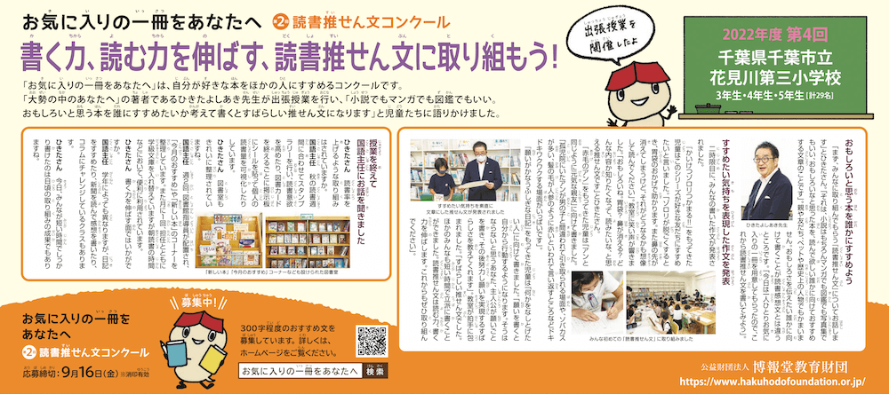
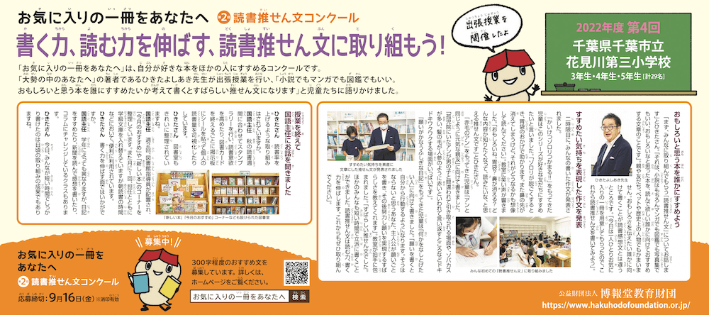
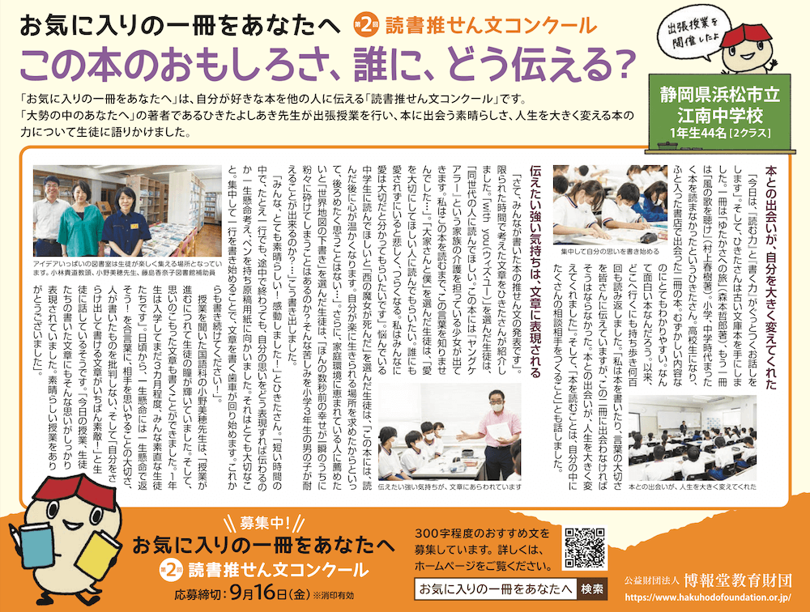
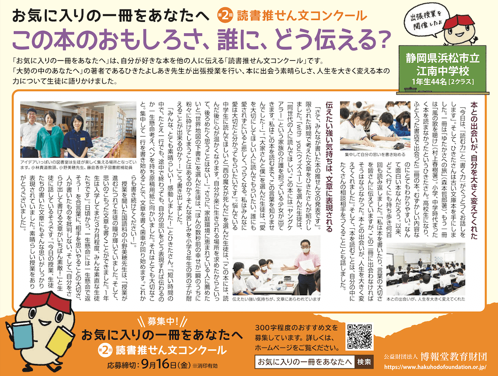
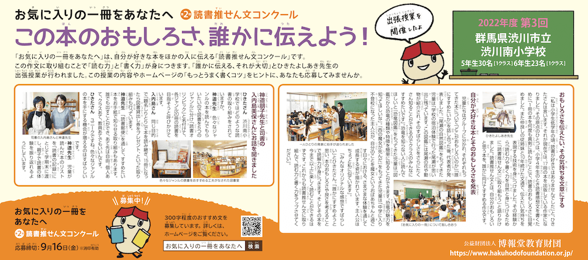
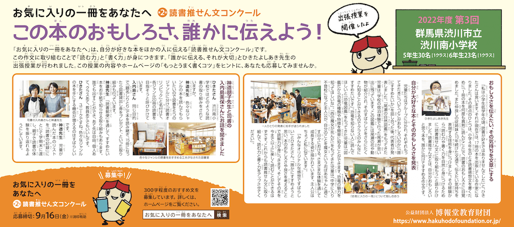
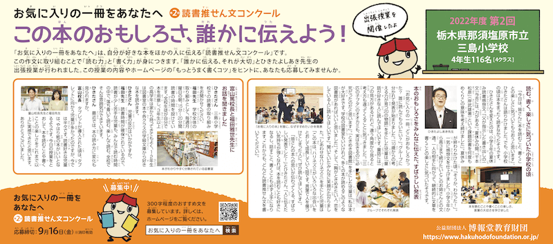
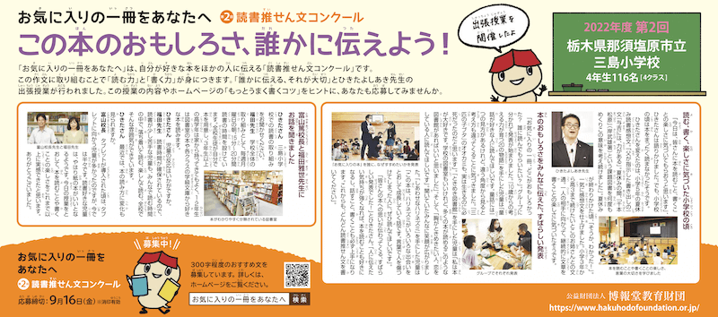

『大勢の中のあなたへ』（朝日学生新聞社）の著者のひきたよしあき先生による出張授業の様子をレポートしていきます。
【2022年度実施レポート】
千葉市立花見川第三小学校（千葉県）
浜松市立江南中学校（静岡県）
渋川市立渋川南小学校（群馬県）
那須塩原市立三島小学校（栃木県）
名古屋市立清水小学校（愛知県）
※2021年度実施レポートはこちら
ひきたよしあき先生が、小学３～５年生29名に向けて、読書推せん文を題材にした授業を行いました。
 

9月10日 朝日小学生新聞
ひきたさん 花見川第三小学校ではどのような読書の取り組みをしていますか。
国語主任 年に4回ほど、地域のボランティアの方のご協力で、読み聞かせを実施しています。また秋の読書週間などではスタンプラリーを行い、目標達成した場合にしおりなどを渡し、読書への意欲を高めています。また、図書カードを終えるごとに掲示板にシールを貼って個人の読書量を可視化できるようにしています。
ひきたさん 図書室もきれいに整理されていますね。
国語主任 週2回、図書館指導員が配置されており、「今月のおすすめ」や「新しい本」のコーナーを整理しています。また月に1回、指導員が担任とともに学級文庫を入れ替えています。これは朝読書の時間などにおいて、便利に利用されています。このほか学習に合わせて、たとえば理科で虫の勉強をしたら、昆虫の関連本を揃えて教室にもっていくといった、授業と連動した読書ができるようにもしています。
ひきたさん 書く力を伸ばす面ではいかがですか。
国語主任 書くことは、考えることとつながっており、それは自分の意見を発表したり、話し合いをするうえで大切な能力なので、いろいろな取り組みを行っています。学年によって異なりますが、日記をすすめたり、原稿を書くことにつながる朝スピーチを取り入れたり、新聞を読んで感想を書いたり、コラムにチャレンジしているクラスもあります。また毎日の授業の後で、振り返りを行って「こういうことがわかった」「ああいうことを調べたい」といったことを文章化する取り組みをお願いしています。
ひきたさん 今日の授業で、みんなが短い時間でしっかり推せん文を書けたのは日頃の取り組みの成果でもありますね。
国語主任 ありがとうございます。千葉市では文集「ともしび」を発行していますが、今年度、本校から6作品の応募に対して5作品入賞することができました。来年本校は統合されますが、最後の年に素晴らしい結果をいただくことができて嬉しく思っています。
「新しい本」「今月のおすすめ」コーナーなども設けられた図書室
ひきたよしあき先生が、中学１年生の２クラス44名を対象に、本に出会う素晴らしさや、伝わる文章を書くコツについての授業を行いました。
 

8月14日 朝日中高生新聞

ひきたさん 江南中学校では、どのように読書への取り組みをしていますか。
小野先生 朝の読書はもちろんですが、各学級委員が自主的に自分たちのクラスで読みたい本を選び、読みたい本が重複している時など、各学級で交互に交換しながら教室に持って行っています。私たち教員や図書館補助員が、交流級、支援級ともに必読書を選定し、ジャンル分けして配置したり、教室に配本したりしています。また、本校ではいろいろな国の生徒がいるので、たとえばイスラム教がわかる本やポルトガル語の本なども置いています。また、今回のコロナ禍の中で図書室の大切さも再認識しました。校長先生とも話し合い、本校は市内の学校の中でいち早く図書室を開きました。
ひきたさん それにしても、図書室はアイデアだらけですね。
藤島先生 先生方と相談しながら、生徒が図書室を楽しく集える場所となるようにアイデアを出しながら努めています。
小林教頭 生徒は昼休みによく図書室に来てくれます。小野先生や藤島先生に会いに来たり、図書室が楽しいからと来たり。そうすることで、生徒たちの本に触れる機会も自然と増えてきます。
ひきたさん いろいろな国の生徒さん、感動するほどいい文章を書いていました。
小野先生 みんな素直な生徒たちです。書くトレーニングはもちろんですが、1年生は入学してまだ3か月程度なのですが、「きちんと人の顔を見て話をする。相手を大事にする。一生懸命には、一生懸命で返しましょう。書いたものを批判しない。自分をさらけ出して書ける文章がいちばん素敵。」など、日頃から伝えるようにしています。
ひきたさん ところで、学校図書について市の取り組みはいかがですか。
小林教頭 たとえば、調べ学習をしたいので学習支援パックとしてこのような本を貸してくださいと申し出ると、市の中央図書館でセットして届けていただけます。
ひきたさん タブレット環境と紙の本の環境はいかがですか。
小野先生 やはり紙の本を大事にしています。藤島先生とも話すのですが、いくらタブレットが便利で大事なツールになっても、ページをめくる楽しさや紙のにおい、手触りなどは、やっぱり大事だねという話をします。少し時代遅れですが（笑）。
小林教頭 今日の授業では、時間とともに生徒の瞳が輝いてきました。生徒たちには、とてもよい刺激を受けた授業になりました。ありがとうございました。
アイデアいっぱいの図書室は生徒が楽しく集える場所となっています。
ひきたよしあき先生が、小学５年生の１クラス30名と小学６年生1クラス23名に向けて、読書推せん文を題材にした授業を行いました。
 

8月14日 朝日小学生新聞
ひきたさん 渋川南小学校ではどのような読書の取り組みをされていますか。
神道先生 本校では、児童に読書の習慣を身につけてもらうためのさまざまな取り組みを行っています。たとえば毎月第１金曜日を「親子読書の日」と定め、親子で好きな本を読む活動をすすめています。また色々なジャンルの本を読んでもらうために、図書を5つのジャンルに分け「読書オリンピック」と名付けて、各ジャンル20冊の読書を目指そうと呼びかけています。
入内島さん 同じ目的で「題名しりとり」で本を読み継ぎ、15冊になったら図書貸出し券をプレゼント、といった取り組みもあります。
神道先生「読書郵便」は、すすめたい本をお手紙に書いて図書室のポストに入れると、相手に届く取り組みです。誰でも出すことができ、あて先は自由。個人あて、クラスあて、教員あてでもいいんです。
ひきたさん それはユニークですね。色々なジャンルの本を手にするきっかけができて素晴らしいです。
入内島さん 図書室の使い方を紹介した「図書室ハンドブック」を作ったり、秋の読書週間には図書委員がクイズやしおり、ポップなどを作って、読書への関心を高めたりしています。
ひきたさん 児童の図書室の利用率はかなり高いようですね。
神道先生 図書室を利用する児童は多く、中には年間200冊以上の本を読む児童もいます。児童が読んだ本のリストを「読書の記録」にとじて学期末に渡し、親子で読書の体験を振り返れるようにしています。
ひきたさん 読む力と同時に書く力も身についていますか。
神道先生 作文については、学年ごとに発達段階に応じた指導を工夫しています。小学生を対象にした作文コンクールなどに積極的に参加している児童もいます。
ひきたさん 読書推せん文への参加も楽しみにしています。
色々なジャンルの読書をおすすめする工夫がなされた図書室。
ひきたよしあき先生が、小学４年生の４クラス116名を対象に、文章を書く力を身につけるコツについての授業を行いました。
 

7月19日 朝日小学生新聞

ひきたさん 三島小学校での読書の取り組みをお聞かせください。
福田先生 学校全体の取り組みとして、毎週月曜日の朝、15分～20分間読書の時間を設けています。全校生徒が自分で本を用意します。3年生以上の高学年は家から持ってきてもよく、1・2年生は図書室の本や各クラスの学級文庫から好きな本を読みます。
ひきたさん 児童の反応はいかがですか。
福田先生 読書時間が確保されているので、読書が少し苦手な児童も、みんなで読む時間の中で、落ち着いて読む、楽しんで読む。全校でそんな雰囲気ができています。
ひきたさん 最近では、本の読み方に変化も見られますか。
富山校長 私も少し気になっていましたが、タブレットが導入されたばかりの頃は、タブレットをする児童が多かったのですが、今では半々です。ひと頃のブームが落ち着いてきたのでしょうか。読みたい本があり、読書好きな児童は、やはり紙の本がいいとなるようです。
ひきたさん 授業では、本を深く読んでいる児童が多いと感じました。
福田先生 確かに今日発表していた児童は、タブレットより読書という児童が多かったですね。自分で文章を書いて、物語を創作するのが好きな子もいます。また、本の貸し出しについては昼休みです。しかし、本校は児童数がおおいので、これまでコロナ禍の中では学年ごとに曜日を決めて貸し出しをしていました。児童に任せてしまうと、やはり読書が苦手な児童は足が遠のいてしまいます。週末読書を宿題にしているので、月に何回かは授業時間や学活の時間にも図書室を利用する時もあります。
本がわかりやすく分類された図書室
ひきたさん 行政単位で読書機会を広げる取り組みはありますか。
富山校長 数年前から、那須塩原市では教育委員会が独自のコンテストを企画したり、読書への取り組みを推進しています。ただ現状をいうと、那須塩原市は県内でもトップレベルのICT環境の普及へと、少し舵を切っています。教室には電子黒板、電子教科書を整え、文科省の実証実験にも参加しています。ですが、各校でも児童の読書習慣は大切という認識は変わりません。今日のような授業をとおして、これからも児童には本を読むことや書くことの楽しさを実感できる機会を増やしたいと思っています。ありがとうございました。
ひきたよしあき先生が、小学６年生の２クラス50名を対象に、文章を書く力を身につけるコツについての授業を行いました。
7月13日 朝日小学生新聞
ひきたさん 清水小学校ではどのような読書への取り組みをされていますか。
赤堀教頭 名古屋市では「読書活動推進計画」のもと、図書室の整備を進め、司書も配置されています。また児童に読書ノートを配布して読んだ本の感想を記入できるようにしています。
ひきたさん 先ほど教室で見たのですが、児童一人ひとりがとても厚い辞書を机の上に置いて利用していますね。
赤堀教頭 わからない言葉、知りたいことが出たら、すぐに調べられるように学校から一人ひとりに貸し出しています。タブレットも使っていますが、辞書を引いて調べる方が記憶に残るように思います。
ひきたさん 読書については司書の方がいる効果は出ていますか。
赤堀教頭 本校では出前授業など体験型の授業を積極的に取り入れています。司書は各小学校を巡回するかたちになっていますが、本校では全クラス順番に「読み聞かせ」をお願いし児童からも好評です。
ひきたさん 児童の読書率は上がっていますか。
赤堀教頭 はい、図書室の利用率もだいぶ上がり、図書委員の「おすすめ本コーナー」、季節に関連したたとえば「夏に関する本コーナー」、あるいは司書が児童にもSDGsを理解してほしいとジェンダーやエネルギー、教育など17項目の課題別に図書を整理した「SDGsコーナー」なども人気です。本校は以前、低学年向けの絵本中心の図書室と中高学年向けの図書室と、二つにわけていたのですが、司書から「発達段階の図書への興味は千差万別で高学年の児童が絵本を読むこともあるので一緒にしてはどうか」と提案があり、現在はひとつにしています。空いた部屋は司書が本を紹介する「ブックトーク」のスペースとして利用しています。
「絵本コーナー」「おすすめ本」コーナーなどもきちんと整理された図書室
ひきたさん 素晴らしい成果が出ていますね。
赤堀教頭 はい、名古屋市全体の取り組みが成果に結びついていると思います。児童は学校の図書室だけではなく、市の中央図書館から借りることも可能です。本校では修学旅行前などは児童たちが旅行先に関連した本をまとめて借りて、事前調査などに役立てていました。これからも児童の読書習慣を定着させ、図書室の活用を図っていきたいと考えています。
【2021年度実施レポート】
倉敷市立上成小学校（岡山県）
西条市立神戸小学校（愛媛県）
新潟市立巻南小学校（新潟県）
石巻市立北村小学校（宮城県）
古河市立古河第二小学校（茨城県）

ひきたよしあき先生が、小学6年生の2クラス73名に、「すすめたい人に向けて、本のおもしろさを伝え、その人の心を揺さぶるような文章にしよう」と語りかけました。


1月16日 朝日小学生新聞
ひきたさん 上成小学校ではどのような読書指導をされていますか。
守分校長 毎週1回は全校あげて「読書の時間」を設けて図書室で本を借りる取り組みを続けています。4冊借りて一週間後に返却しますからしっかり読む児童は相当の読書量になります。また月に1回ほどは地域ボランティア、保護者のご協力を得て「読み聞かせの会」を開いています。選書も学年ごとに配慮していただき、学校の図書室、市立図書館あるいはご自宅の蔵書から選んだ本を読んでいただきます。
ひきたさん それは素晴らしいです。
守分校長 毎回児童たちが熱心に聞き入る姿が印象的です。地域の方とのふれあいと同時に、本に親しむ良い機会になっていると思います。
ひきたさん 図書室も充実していそうですね。
守分校長 倉敷市では各校に司書が配置されているおかげもあり、利用しやすい環境が整っています。児童への図書の紹介についても力を入れています。たとえば市からは毎月学年ごとに推薦図書が選定されるのですが、本校ではその表紙をコピーしボード貼りして紹介しています。授業で人権や環境問題を取り上げるタイミングに合わせて関連図書を置いたコーナーや特定の作家の作品をまとめて紹介しているデスクなどもあります。さらに低学年向けには、市長や市の職員が選書に関わり新たに購入した「いちねんせいぶんこ」が人気です。文字通り、一年生に読書の道案内をし、おすすめの本を置いてあるコーナーです。
ひきたさん 本に関心を持てるような紹介がなされていますね。
守分校長 読みたい本をすぐに手にできるように、3年ほど前から管理システムが電子化されています。2台の端末で検索や貸出し、返却などができるようになっていて、児童たちもすっかり慣れて活用しています。これからもより利用しやすい図書室づくりに取り組みたいと思います。
低学年に人気の「いちねんせいぶんこ」をはじめ充実の図書室

ひきたよしあき先生が、小学4年生の2クラス36名に、「自分の好きな本を、誰にすすめたいか考えて書くと、とてもわかりやすく伝わる文章になります」と語りかけました。


1月9日 朝日小学生新聞
ひきたさん 神戸小学校では児童の読書指導にどのように取り組んでいますか。
山内教頭 本校の調査によると、児童たちは「本を読んでいる」という意識はありますが、保護者の皆さまからは「読書量が少ない」という声をいただいています。そこで本離れが進まないように、毎朝学校にきて準備ができた児童から本を読む「読書の時間」を設けています。10分ほどですが思い思いの本を読むようにしています。また特徴的なところでは、ギガスクール構想で一人ずつタブレットが整備されており、これを活用しています。現在、試用期間ではありますが電子書籍のサブスクリプションサービスを導入し、タブレットで電子図書を読むという、新しい読書体験を提供しています。読んだ本の積み重ねやランキングも表示されるので、楽しく取り組んでいるようです。
ひきたさん タブレットの読書体験とは進んでいますね。
倉﨑校長 西条市にも電子図書館があり、登録すると1回3冊まで電子図書を借りることができ、主に上級生で利用している児童が多いようです。タブレットの活用は昨年度からですが、気軽に使えるというメリットがあるせいか、休み時間も読書をしている姿を今まで以上に見られるようになりました。この1年でタブレットは学校生活の一部になったように活用されているので、それが全体の読書量のアップにつながっているものと期待しています。
ひきたさん 読むことの一方で書くことの指導はいかがですか。
倉﨑校長 全国学力学習調査状況の考察によると、本校の児童は書くことについて「短くまとめることがやや弱い」という結果が出ています。そこで現在、各授業の終わりに、その授業でわかったこと、心に残ったこと、疑問を持ったこと、もう少し調べたいと思ったことなどを書く時間を設けています。本校では「きらり」と呼んでいるのですが、感じ考えたことを「きらり」として書いていこう、という取り組みを行っています。それが少しでも表現力の向上につながればと思っています。
読書は図書室とタブレットを併用しています

ひきたよしあき先生が、小学6年生の2クラス74名に、「お気に入りの本を誰にすすめたいか、なぜすすめたいかを考え、その思いを素直に文章にしよう」と語りかけました。


12月14日 朝日小学生新聞
ひきたさん 巻南小学校では読書についてどのような取り組みをされていますか。
浅野校長 新潟市ではすべての小中学校に図書館司書を配置しています。そのため本校も図書館が充実し、配架もできてとても使いやすくなっています。また読書案内、指導なども年に何回かクラスごとに実施しています。5、6年生を中心にした図書委員会も「おすすめの本紹介」などの活動を積極的に行っています。20人ほどの図書委員が司書と連携しながらしっかり考えて、たとえば長期休みの前には「家の人と読みましょう」といった呼びかけのもと、ふさわしい本を選んで紹介するなど、大変頑張ってくれています。
ひきたさん 児童が児童にすすめているのが素晴らしいですね。
浅野校長 春と秋には「読書旬間」という取り組みを設けて、図書委員だけではなく多くの児童が「私のおすすめの本」というカードをつくり、それを司書が整理して紹介するようにしています。するとその本の貸出率がとても高くなります。友だちからすすめられると「読んでみたい」と思うようですね。
ひきたさん 児童の図書室の利用率はとても高そうですね。
浅野校長 今年度は全校で年間4万冊を目標にしていますが、すでに3万冊を超えているので（11月現在）、達成できると思います。本校の図書室には「たたみコーナー」があり、小さなテーブルも設置して低学年が気軽に利用できるようにしています。このコーナーも人気ですね。
ひきたさん 自分の考えを表現する面ではいかがですか。
浅野校長 コミュニケーション能力は本校でも課題です。なかなか自分の考えや思いを整理して、うまく伝えることがむずかしいですね。文部科学省による「GIGAスクール構想」にもとづいて、昨年度末に児童たちにタブレット端末が整備され、これを自己表現力を育むことにも活用していきたいと考えていますが、取り組みはまだ始まったばかりです。本日の「読書推せん文」という活動は「誰かに伝える」ということを考えて書くとうかがっていますので、表現の仕方をぜひ児童たちにご指導ください。
「たたみコーナー」もあり利用率が高い図書館

ひきたよしあき先生が、「読書推せん文」のポイントを説明した後、5・6年生19名のみなさんが書いた作品を紹介しました。


11月28日 朝日小学生新聞
ひきたさん 本日は「お気に入りの一冊をあなたへ」という作文の授業を行いますが、北村小学校では国語教育や作文にどのように取り組んでいますか。
平塚教頭 今年の校内研究が国語となっており、研究主任を中心に取り組んでいます。今日の出張授業への申込みもその流れで行われました。今は読むところからスタートしていますが、読後の感想を伝えることを通して、書く力を伸ばしていければと考えています。また校長も学校目標の一つに「読書活動の推進」を掲げ、学級担任もそれを受けて力を入れています。
ひきたさん 校舎の真ん中に図書室が配置されていますね。廊下を通っていると図書室に入っているような設計が素晴らしいですね。
平塚教頭 オープンスペースのようなつくりで開放的な雰囲気が特徴の図書室です。
ひきたさん 児童の利用率はいかがですか。
平塚教頭 一昨年までは貸出率は高くなかったのですが、昨年から学校司書が配置され、その活躍もあり昨年、今年と貸出しはとても多くなってきています。
ひきたさん 本棚が手にとりやすく、読みやすい並びになっています。図書室を整理することが貸出しのアップにもつながるんですね。
平塚教頭 はい、自慢できる図書室になりました。また教育委員会からのサポートで新書を入れることもでき、書庫が充実してきています。
ひきたさん 先ほど読書で書く力を伸ばすというお話が出ましたが、児童たちは作文は得意ですか。
平塚教頭 アンケート調査をしたのですが、「書くのは苦手」という子が多いですね。「どういう言葉を使ったらいいのかわからない」という回答が目立ち、低学年になると「何を書いて良いのかわからない」という子も多かったです。
ひきたさん 今日は少人数で、2時間分授業ができますから、皆で楽しく学びながら「何を書いてもいいんだよ」と伝える授業をします。
平塚教頭 それは楽しみです。どうぞよろしくお願いします。
開放的で利用しやすい図書室
ひきたよしあき先生が、小学2年生の2クラス68名を対象に、小学生時代の読書体験や、読む力や書く力を伸ばすためのヒントについて話しました。
11月19日 朝日小学生新聞
ひきたさん 本日行う作文教室は「読書推せん文」を書こうというものですが、一般的な読書感想文ではなく「誰かに伝えよう」というところが大きなポイントです。お母さんや友だちに「こういうところが面白いよ」と紹介していくことで、本を読むこと、ものを書くこと、人に伝える力を伸ばしていければと思います。古河第二小学校では国語教育に力を入れていますか。
佐藤校長 国語教育に限らず、今年度の全校テーマは「コミュニケーションの充実」です。一人ひとりが「今日こんなことがあったよ」とか「面白いことがあったよ」といった自分の思いを伝えることを大事にしていこうという取り組みを行っています。今伺って、読書感想文は先生に提出しますが、やはり「面白かった」という気持ちを誰かに伝えたい、というのが基本だと思います。なにかカタチから入ってしまうのではなく、本を読んで面白かったという思い、ワクワクした思いを誰かと共有したいという気持ちですね。「ねぇねぇ、聞いてよ」というのが原点だと思います。
ひきたさん そうですね、まさにそこが作文教室のテーマです。
佐藤校長 図書室も教頭先生と図書支援員が本が好きで、子どもたちに喜んでもらえる本は何か、本を手にとりやすい環境とは、といったことを懸命に考えて整備しています。
ひきたさん 子どもたちもそれを感じていますか。
佐藤校長 夏休みに図書室をリニューアルして本も増やしましたが、新学期が始まり、保護者との連絡帳に「図書室が変わって楽しみにしている」「本が増えて嬉しい」といった感想をもっていることが書かれていました。本校は児童たちの図書室の利用率がとても高いことも特徴です。
ひきたさん それは素晴らしいことですね。
佐藤校長 読書は楽しいと、きっかけをつくることが大切ですね。この読書推せん文の「誰かに伝えたい」というのもとても大事な視点だと思います。
ひきたさん 「誰かに伝えよう」というと、相手のことを考えます。そうすると文章がガラリと変わります。そこが面白いところです。
充実した図書室


{kind=link}
{kind=link}